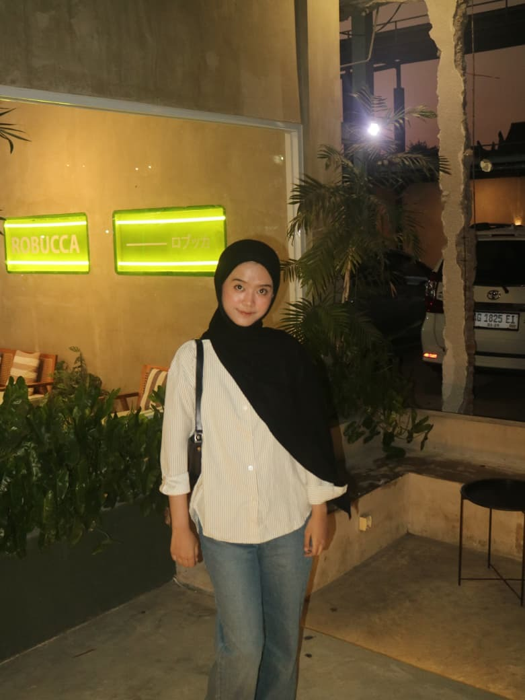

Portofolio
Beberapa ruangan yang pernah saya rancang

Fasad Skandinavian

Ruang Tamu Skandinavian

Kamar Tidur Skandinavian

Dapur Skandinavian
Selamat datang di profil saya
Desain Interior
Menata ruang agar terasa hangat, rapi, dan sesuai kepribadian penghuninya, dari konsep sampai ruangan siap dihuni.

Halo, saya Amara Dwi Natarin, seorang desainer interior yang senang menata ruang hunian, kafe, dan kantor. Bagi saya, interior yang baik bukan hanya enak dilihat, tetapi juga terasa nyaman dipakai setiap hari dan mencerminkan karakter pemiliknya.
Saya mengerjakan proyek mulai dari diskusi kebutuhan, pembuatan moodboard, denah tata letak, visual 3D, sampai pemilihan material, furnitur, dan pencahayaan. Dengan begitu, klien bisa membayangkan hasil akhirnya sejak awal dan ikut menentukan pilihannya.
Saya menyukai warna lembut, bahan alami seperti kayu dan rotan, serta ruang yang tidak berlebihan. Menurut saya, ruangan yang rapi dan lapang membuat penghuninya lebih tenang, jadi setiap sudut saya rancang agar punya fungsi yang jelas.
Saat ini saya terus belajar tren desain dan teknik visualisasi terbaru. Saya terbuka untuk kolaborasi, proyek freelance, maupun kesempatan magang. Silakan lihat karya saya di bawah, lalu hubungi saya untuk berdiskusi.
Beberapa ruangan yang pernah saya rancang
Ingin merancang ulang rumah atau ruang usaha Anda? Isi form di samping dan saya akan menghubungi Anda secepatnya.